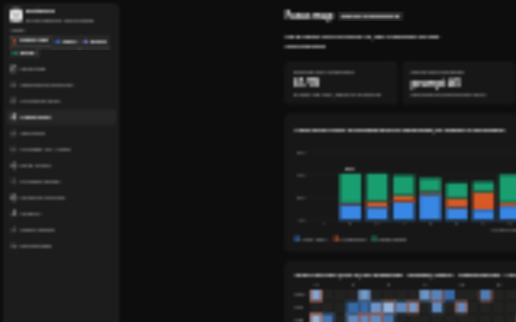
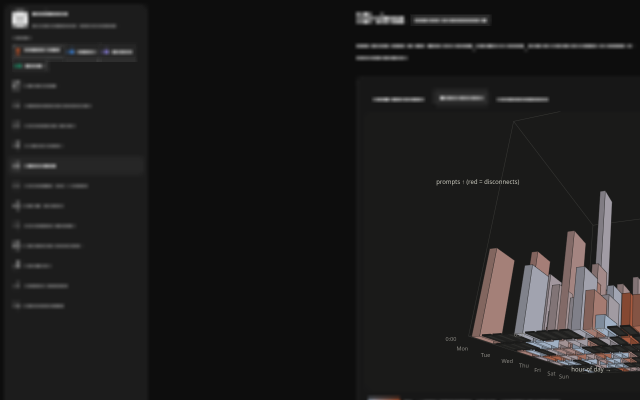

Claude Code Codex Gemini CLI Cursor
driftguard
Your agent will build anything you ask. driftguard asks whether you should. It audits your AI-coding history, interviews you, and writes drift guards into your agent's rules.
A bug fix turns into a new app. One side project becomes seven. Your agent never says no.
- Agents
- 4Claude · Codex · Gemini · Cursor
- LLM tokens
- 0to scan, report, guard
- Dependencies
- 0Python stdlib
- Data
- Localnothing uploaded
Four steps
Scan
Reads every agent's local history, incrementally. New user? More diagnostics. Heavy usage? Frugal mode.
0 tokens 02Score
Cheap subagents read prompt-only digests, far smaller than transcripts, and score sessions and projects.
Your agent 03Interview
Polls about your goals, limits and every harsh verdict. Your answers override the AI.
You 04Report + guard
An interactive report on localhost. Guard blocks are shown as a diff and only applied when you agree.
0 tokens ↗Rules your agent follows every session.

Analytics tools show you numbers. driftguard turns them into managed blocks in CLAUDE.md, AGENTS.md, GEMINI.md and .cursor/rules, so the next session stops you before the drift starts.
Drift guard
- Project registry: active, stalled, parked, dead
- Stop and poll when a task drifts
- New-project gate: which project pauses?
- Frustration protocol
Purpose blocks
- Purpose and done-condition per project
- The drift traps you fell into, with dates
- Parked projects trigger the gate
Token crisis
- Burn per 5-hour block
- Frugal mode for subagents
- A 40-line handoff, no LLM
Edits stay between driftguard's own markers · dry run by default · .bak backups

Stop at prompt #2.
Not project #8.
Focus usually breaks right after the first answer. driftguard shows where yours does and writes the rule that catches it.
- Tokens to scan
- 0
- Handoff length
- ≤40
- Agents
- 4
One command. Then ask your agent.
The CLI installs with pipx, uv or pip. The one-liners also install the integrations for every agent they find on your machine.
- 01
driftguard scan
Read every history and pick a mode.
- 02
/driftguard
In your agent: scoring, interview, verdicts and guards.
- 03
report --serve
The interactive report on localhost.
- 04
handoff
Out of tokens? A 40-line HANDOFF.md, then a fresh session.
The report, on synthetic data.
Motivation timeline, prompt coaching, focus map, tokens, a project kill or keep board, a drift graph and 3D views. One HTML file that opens offline.
Run it
For token numbers, use ccusage. For a friction report, use /insights. For an agent that stops you starting project #8, use driftguard.